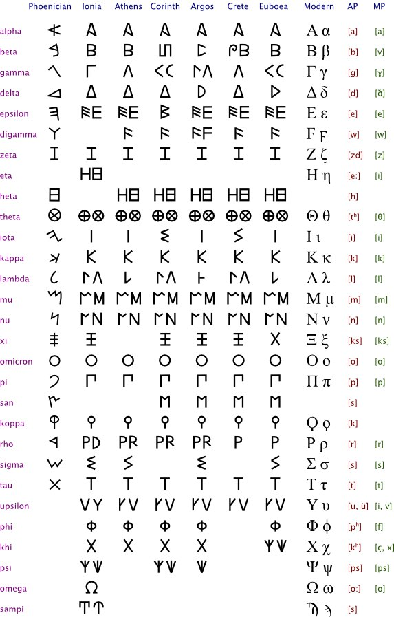

I always find A looking so much like D
a like d, A like Д, like Δ and singular closed perimeter is only
found in A, D, O, P, Q & R. OP & QR are supposed to be
diacritics. Like S is diacritic to C having form like Ç
and D is reflecting R in k-symmetry & in here:

And here’s the k-simmetry
but I won’t tell much about it now, maybe in some other story
I’d name something like k